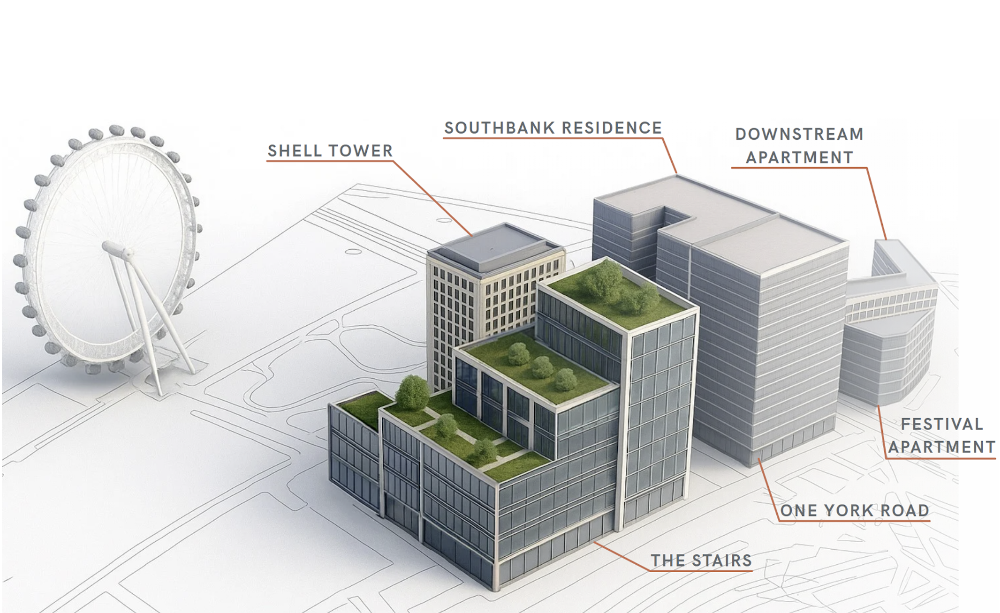
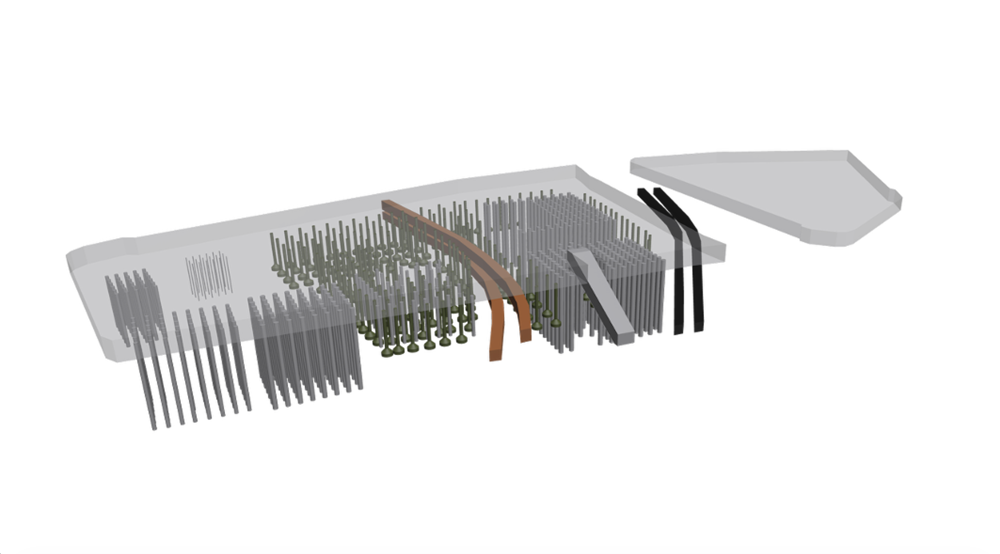

01
Jun 2025
Shell Centre Redevelopment
Geotechnical-Led Masterplanning
RIBA Stage C redevelopment proposal for the Shell Centre, London. Geotechnical-led masterplanning above Bakerloo and Northern Line tunnels, with staged construction modelled in PLAXIS and a 100% pile reuse strategy to minimise ground disturbance and embodied carbon.

